UDN
Search public documentation:
MasteringUnrealScriptBaptismByFire
日本語訳
中国翻译
한국어
Interested in the Unreal Engine?
Visit the Unreal Technology site.
Looking for jobs and company info?
Check out the Epic games site.
Questions about support via UDN?
Contact the UDN Staff
中国翻译
한국어
Interested in the Unreal Engine?
Visit the Unreal Technology site.
Looking for jobs and company info?
Check out the Epic games site.
Questions about support via UDN?
Contact the UDN Staff
- CHAPTER 2: UNREALSCRIPT BAPTISM BY FIRE
- 2.1 BASIC SYNTAX
- 2.2 THE REGENERATION MUTATOR
- TUTORIAL 2.1 – RESEARCHING THE REGENERATION MUTATOR
- TUTORIAL 2.2 – INITIAL PAWN CLASS SETUP
- TUTORIAL 2.3 – SETTING UP THE REGENERATION TIMER
- TUTORIAL 2.4 – THE MUTATOR SCRIPT
- TUTORIAL 2.5 - COMPILING THE SCRIPTS
- TUTORIAL 2.6 – PUBLISHING AND TESTING THE MUTATOR
- SUPPLEMENTAL FILES
CHAPTER 2: UNREALSCRIPT BAPTISM BY FIRE
Whether you are learning to program for the first time or simply learning a new language, the idea of beginning a new journey can be quite daunting. Programming with UnrealScript requires knowledge of many concepts, several of which are quite complex. Before we dive into the depths of UnrealScript, we are going to get our feet wet by creating a fairly simple script. There will be no in-depth explanations of the concepts used in the creation of the script. Instead, this chapter should serve as an opportunity for you to familiarize yourself with the process of creating a script from planning to implementation to execution while demonstrating the power of UnrealScript to bring ideas to life. Although no knowledge of the UnrealScript language is necessary to complete this exercise, there are some fundamental concepts we will be encountering which we should touch on before we jump right in.2.1 BASIC SYNTAX
The developers of UnrealScript wanted a language that would be familiar with C++ and Java programmers so when designing the language they created it as a c-style language. All that basically means is that it has similar semantics to those languages like terminating statements (basically a line of code) with a semicolon (;) and enclosing groups of statements within curly braces ({ }). When we go about typing code we are essentially repeating sets of identifiers, keywords, operators, and comments over and over again to create the functionality that we want. Let’s take a brief look at each of these concepts.IDENTIFIERS AND KEYWORDS
Identifiers are the names that programmers give to items that they wish to refer to such as class, variable, and function names. In UnrealScript, all identifiers are case-insensitive meaning that RegenPerSecond, REGENperSECOND, and ReGeNpErSeCoNd are all considered the same identifier. When coming up with identifier names there are a few rules to be aware of: 1. All identifiers must start with a letter or an underscore (_) 2. Any combination of letters, numbers, or underscores may follow 3. An identifier cannot include a space 4. The identifier cannot be the same as a keyword Some examples of valid identifiers are:___ValidIdentifier Valid_Identifier Valid123Identifier456Some invalid identifiers are:
3_Invalid Inv@lid Invalid Identifier classKeywords are special words that are reserved by the compiler that correspond to specific functionality. In our sample script we saw a few different keywords: class function var defaultproperties. Like identifiers, keywords are also case-insensitive.
EXPRESSIONS AND OPERATORS
An expression is a group of values, operators, and grouping symbols that form an entity which when evaluated will result in some meaningful value that can be stored. Here is a list of some example expressions:100 8 + (3 – 2) * 7 2 * PIOperators are special functions that manipulate the values of items, called operands; they are an integral part of expressions as all interesting expressions make use of them. We saw some operators in the above sample expressions: + () *. Operators and expressions are an essential part of any program. As such, they will be covered in greater detail in a later chapter. For now, this should provide you with sufficient understanding to help you as you progress through the remainder of this chapter.
COMMENTS
Comments are used to provide documentation to your source code and are completely ignored by the compiler. Often times they are used to describe what a function and its arguments are to be used for. Comments are especially important when collaborating on a project so other programmers will be able to read and understand the code with ease. Code can easily appear as gibberish to another person or even to its author after an extended period away from the code without proper documentation and explanation. Another use for commenting is during testing and debugging. A section of code can be “commented out”, meaning that it will no longer be acknowledged and executed. This method can be used to find a troublesome section of code or to see the difference between two similar sections of code. Using comments for this purpose saves the trouble of deleting and retyping the code, making the entire process easier and more efficient. UnrealScript supports two types of comment structures:// A line comment /* A block comment */A line comment is just that, a comment that starts from the beginning of the forward slash pair (//) and goes until the end of the line is reached. A block comment tells the compiler to ignore any content between the opening (/*) and closing (*/) comment tags. Here is what part of our example script might look like when comments are added.
/* This class provides the ability for the player to regenerate his
health every second. */
class UTMutator_SuperRegen extends UTMutator;
// The number of hit points that should be restored every second.
var() float RegenPerSecond;
function InitMutator(string Options, out string ErrorMessage)
{
SetTimer( 1.0, true /* This timer should be called repeatedly */ );
Super.InitMutator( Options, ErrorMessage );
}
2.2 THE REGENERATION MUTATOR
Over the course of the next few sections, you will be creating a new mutator. A mutator in Unreal is a script that alters the way the standard game functions in some way. This could be something as simple as replacing all the weapons in a map with rocket launchers or it could be much more involved such as changing the player’s view from a first- to third-person perspective. In our example, we are going to be using the mutator to cause the player’s health the regenerate a specified amount every second during play. As stated in the previous chapter, ConTEXT will be the text editor used for all the examples and tutorials throughout this book. If you plan to use ConTEXT, make sure you have it set up according to Appendix B: Setting up ConTEXT for Unreal Engine 3. If you plan to use WOTGreal, refer to Appendix C: Setting up WOTGreal for Unreal Engine 3.PLANNING FOR THE CLASS
Before we begin writing any code, it is important that we create a specific plan of what exactly the script should do. We have already stated that the mutator should regenerate the player’s health every second. This is a good start, but we can ask some questions that will help fully flesh out the functionality.- How do we go about regenerating the health?
- Should all players’ health regenerate? Bots?
- How much should health regenerate each second?
- Should this amount be configurable?
- Up to what point should the health continue to regenerate?
- Are there circumstances when health should not regenerate?
TUTORIAL 2.1 – RESEARCHING THE REGENERATION MUTATOR
At this point, a little research would serve us well. There are a few issues that must be resolved before any actual coding can be done. First, we need some way to replace all the players in the game with our own class that will handle the regeneration. Second, we need to find either the value of the maximum health allowed a player under any condition or a variable representing this value. Finally, some method of determining when the player is inside of a pain-causing volume is necessary. Knowing where to look when trying to find a specific piece of information can often be a difficult proposition. You’ll find that the more familiar you become with Unreal’s classes, the easier it becomes to find what you are looking for. 1. The GameInfo class handles the functionality with regards to game types. This would be a good place to start looking for a way to replace the default pawn class used in the game with our own. Find the GameInfo.uc script located within the ../Engine/Classes directory and open it. 2. Using the search functionality built in to the text editor to locate certain keywords is a great way to find what you are looking for in most cases. Since we are looking to set the class to be used for all Pawns in the game, PawnClass would be a good term to search for. It is important to make sure you are searching from the top of the document so nothing is overlooked.
FIGURE 2.1 – Find Text dialog searching the GameInfo class for the term “PawnClass” 3. Perform a search of the Actor class for the keyword PawnClass by first pressing Ctrl + F. Enter the term “PawnClass” in the Find What field of the Find Text dialog that appears. Also, be sure to check the From the top option. Finally, click Find. The first match should be: var class
FIGURE 2.2 – Find Text dialog searching the UTPawn class for the term “Health” The first item the search should find will be: var int SuperHealthMax; /** Maximum allowable boosted health */ Bingo! This is exactly what we were looking for. With this piece of information in hand, we can now move on to searching for the final piece of information needed for the script. 6. If you don’t have any experience with Unreal, either through level design or scripting, knowing what to look for in this final search could be difficult. Volumes are a method used in Unreal to define an area of space. Some of these volumes, specifically PhysicsVolumes, can affect the physical properties of the space they enclose as well as inflicting pain on any players located within them through the use of the bPainCausing property. With this bit of knowledge, we can devise a search for the keyword bPainCausing. Searching in the UTPawn class would make sense to begin with, but our search would not result in anything useful. Moving on to the parent Pawn class would be the next logical choice Open the Pawn.uc script located within the ../Engine/Classes directory. 7. Again, press Ctrl + F to perform a search. Enter the term “bPainCausing” in the Find what field and choose the From the top option. Press Find to start the search. 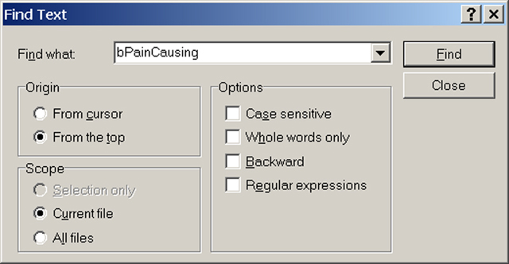
FIGURE 2.3 – Find Text dialog searching the Actor class for the term “PhysicsVolume” 8. The first match for this search reveals the following:
//Pain timer just expired.
//Check what zone I'm in (and which parts are)
//based on that cause damage, and reset BreathTime
function bool IsInPain()
{
local PhysicsVolume V;
ForEach TouchingActors(class'PhysicsVolume',V)
if ( V.bPainCausing && (V.DamagePerSec > 0) )
return true;
return false;
}
Again, we have found exactly what we were looking for.
With a solid plan in place and all the necessary information in hand, we can begin writing the code for our regeneration mutator.
TUTORIAL 2.2 – INITIAL PAWN CLASS SETUP
1. Open ConTEXT if it is not already open. 2. The first thing we need in order to start writing the code for the custom Pawn class is a new script file. From the File menu, choose New or press the New File button in the toolbar. 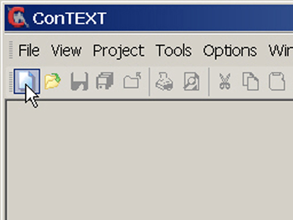FIGURE 2.4 – The New File button 3. Use the Select Active Highlighter dropdown to choose the UnrealEd or UnrealScript highlighter for this new file. The highlighter you choose will depend on which one you have installed and personal preference. 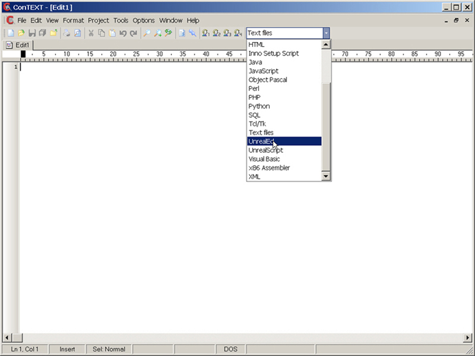
FIGURE 2.5 – The Select Active Highlighter dropdown 4. We can now begin writing the code. The first part of any new script will be the class declaration. This is where we give a name to the script and determine what its parent class will be. On the first line, type the following: class UTPawn_SuperRegen extends UTPawn; With this line of code, we are naming our class UTPawn_SuperRegen. We have also specified that it will be inheriting from the UTPawn class. This essentially means our class will contain all the functionality of the UTPawn class as well as any functionality we add. 5. We will use one variable to represent the amount to regenerate the health of the player each second. Press Enter twice and type the following code on line 3. var int RegenPerSecond; This variable will be given an initial value in the next step, but will not actually be used further until later on when modifying the health. 6. The final part of the initial class setup involves creating the defaultproperties block. This will hold values for the properties of our class. Press Enter several times and type the following:
defaultproperties
{
RegenPerSecond = 10
}
Here, we have specified the name of the group for this mutator as well as given an initial value to the RegenPerSec variable.
7. That will conclude the initial setup of the class. The code up to this point should look like the following:
class UTPawn_SuperRegen extends UTPawn;
var int RegenPerSecond;
defaultproperties
{
RegenPerSecond=10
}
8. As is always a good idea, we will now save the script so that our progress is not lost. From the File menu, choose Save as… In the dialog that opens navigate to one of these directories:
For Windows XP:
C:\Documents and Settings\[User Name]\My Documents\My Games\Unreal Tournament 3\UTGame\Src
For Windows Vista:
C:\Users\[User Name]\Documents\My Games\Unreal Tournament 3\UTGame\Src
9. Create a new Folder inside the Src directory.
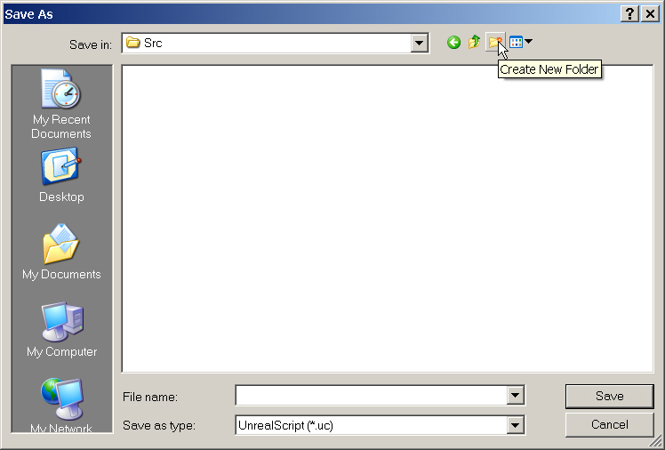FIGURE 2.6 – The Create New Folder button in the Save As dialog. Name this new folder MasteringUnrealScript. 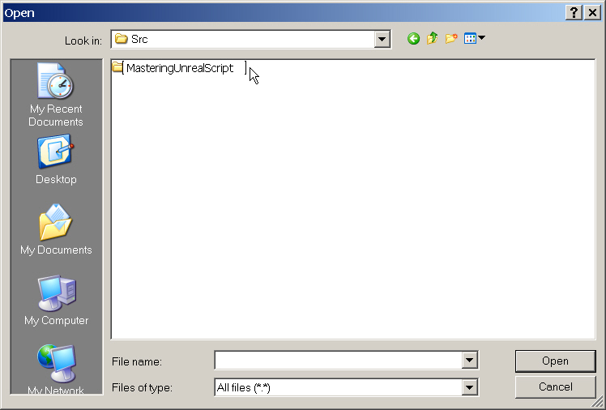
FIGURE 2.7 – A new folder has been created named MasteringUnrealScript. 10. Open this directory and create another new folder. Name this folder Classes and open it as well. 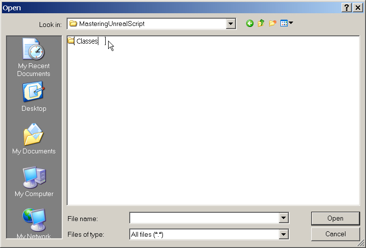
FIGURE 2.8 – A new folder has been created named Classes. 11. Finally, enter UTPawn_SuperRegen as the name of the script making sure that UnrealScript (*.uc) is selected in the Save as type field and click Save. 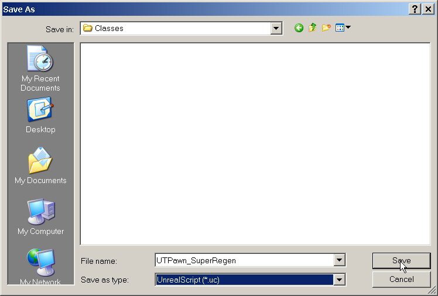
FIGURE 2.9 – The Pawn script has been named and is ready to be saved. Of course, at this point the class has no added functionality. We will be adding that in the next tutorial.
TUTORIAL 2.3 – SETTING UP THE REGENERATION TIMER
With our new Pawn class created, it is time to add in the functionality that will set it apart from the standard UTPawn class. This will include setting up a Timer function which will increase the Health of the player each time it is executed as well as a method for making sure this Timer gets executed every second. 1. Continuing from the previous tutorial, open the UTPawn_SuperRegen.uc file in ConTEXT. 2. After the declaration of the RegenPerSecond variable, declare the Timer function by typing the following:
function Timer()
{
}
Timers are a special type of function that will be called after a specified amount of time and can be forced to repeat as well. This makes them ideally suited for our purposes.
3. Now, let us begin adding some functionality to the Timer function. Place the cursor after the opening curly brace ({) and press Enter. Then press Tab to indent this section of code. Type in the following code:
if (Controller.IsA('PlayerController') && !IsInPain() && Health<SuperHealthMax)
{
}
This piece of code may appear complex at first glance, but it is fairly simple in actuality. It may be easier to digest when broken apart into pieces.
if ()
{
}
This begins an If statement. It essentially says that if the expression within the parentheses is true, the code that will be placed within the curly braces ({}) will be executed.
Controller.IsA('PlayerController')
This bit of code is checking to see if this Pawn is player-controlled. If so, we move on to the next piece of code.
IsInPain()
This expression is checking to see if this Pawn is inside a pain-causing volume. If it is not (notice the ! symbol), we move on to the next piece of code.
Health < SuperHealthMax
This expression is checking to see if the Health of this Pawn is less than the absolute maximum allowed health. If it is, then the code between the curly braces ({}) can be performed.
4. Place the cursor after the opening curly brace ({) of the If statement and press Enter. Then press Tab to indent this section of code. Type the following:
Health = Min(Health+RegenPerSecond, SuperHealthMax);
Here we are taking the current value of the Health and adding the regeneration amount to it. This value is then compared against the maximum allowed health and the lower of the two is assigned to the Health of the Pawn. In essence, this will perform the regeneration while capping the resulting health value at the maximum allowed.
5. The Timer function itself is now complete and should appear like so:
function Timer()
{
if (Controller.IsA('PlayerController') && !IsInPain() && Health<SuperHealthMax)
{
Health = Min(Health+RegenPerSecond, SuperHealthMax);
}
}
6. We still need a way to assure that this Timer is executed every second so the regeneration is actually performed. Earlier we discussed that timers are a special type of function. In order to start a timer, another function called SetTimer must be executed. The only real issue is where do we place the call to this SetTimer function so that it will be executed when play begins? It just so happens there is a function in all Actors called PostBeginPlay which, appropriately enough, is executed immediately after play begins.
Below the declaration of the RegenPerSecond variable and above the Timer function, type the following:
simulated function PostBeginPlay()
{
}
You may notice the new keyword Simulated being used. Don’t worry about that for now. It has to do with networking which is a complex topic that we will get into much later on.
7. Place the cursor after the opening curly brace of the PostBeginPlay function and press Enter. Then press Tab to indent this section of code. Type in the following:
Super.PostBeginPlay(); SetTimer(1.0,true);The first line in this function says that the PostBeginPlay function should be executed in the parent class. This means the UTPawn’s version of PostBeginPlay will be called at this point. Then, the second line starts the Timer. It will be executed every 1.0 seconds and it is set to loop. 8. With that bit of code finished, the custom Pawn class should be complete as well. The entire Pawn class should look like the following:
class UTPawn_SuperRegen extends UTPawn;
var Int RegenPerSecond;
simulated function PostBeginPlay()
{
Super.PostBeginPlay();
SetTimer(1.0,true);
}
function Timer()
{
if (Controller.IsA('PlayerController') && !IsInPain() && Health<SuperHealthMax)
{
Health = Min(Health+RegenPerSecond, SuperHealthMax);
}
}
defaultproperties
{
RegenPerSecond=10
}
9. Save the UTPawn_SuperRegen.uc file in ConTEXT to preserve your progress.
Now that the custom Pawn class is complete, the next step is to begin writing the code for the mutator class itself. We will tackle this in the next tutorial.
TUTORIAL 2.4 – THE MUTATOR SCRIPT
1. Open ConTEXT if it is not already. 2. From the File menu, choose New or press the New File button in the toolbar. 3. Use the Select Active Highlighter dropdown in the toolbar to select the UnrealScript highlighter of your choice. 4. On the first line of the new script, type the following code: class UTMutator_SuperRegen extends UTMutator; In a similar fashion to the Pawn class, this line names this class UTMutator_SuperRegen and specifies that it will be a mutator with all of the functionality built into the UTMutator class as well as any functionality we may add. 5. Press Enter a couple of times and add the following code to the script.
simulated function PostBeginPlay()
{
}
As we saw in the custom Pawn class, the PostBeginPlay function will be executed very early on. Inside this function is where the code that replaces the GameInfo’s DefaultPawnClass with our own custom Pawn class.
6. Now, place the cursor after the opening curly brace and press Enter. then press Tab to indent this section of code and type the following:
Super.PostBeginPlay(); WorldInfo.Game.DefaultPawnClass = class'MasteringUnrealScript.UTPawn_SuperRegen';The first line of this code will cause the PostBeginPlay function of the parent class to be executed. This ensures that any underlying actions located within the PostBeginPlay function will be performed. The second line contains the meat of our mutator class. WorldInfo.Game is simply a reference to the current GameInfo. We are accessing its DefaultPawnClass variable and setting it to use our custom Pawn class. 7. All that is left to finish coding the mutator class is to add the defaultproperties block. After the PostBeginPlay function, add the following code.
defaultproperties
{
GroupNames[0] = "PLAYERMOD"
}
The GroupNames array is simply a way to label mutators and keep mutators which might potentially conflict with one another from being loaded at the same time. This is important as it is possible that another mutator might replace the Pawns with its own custom Pawn. This would override the effect of our mutator making it useless. Since no two mutators with a matching group name may be loaded simultaneously, this keeps one mutator from overriding another. We have chosen the label PLAYERMOD since that is essentially what this mutator does.
8. The mutator class should now be completed. The entire mutator class should look like the following:
class UTMutator_SuperRegen extends UTMutator;
simulated function PostBeginPlay()
{
Super.PostBeginPlay();
WorldInfo.Game.DefaultPawnClass = class'MasteringUnrealScript.UTPawn_SuperRegen';
}
defaultproperties
{
GroupNames[0] = "PLAYERMOD"
}
9. Save the new script in the MasteringUnrealScript/Classes directory with the UTPawn_SuperRegen.uc script. Name this script UTMutator_SuperRegen.uc.
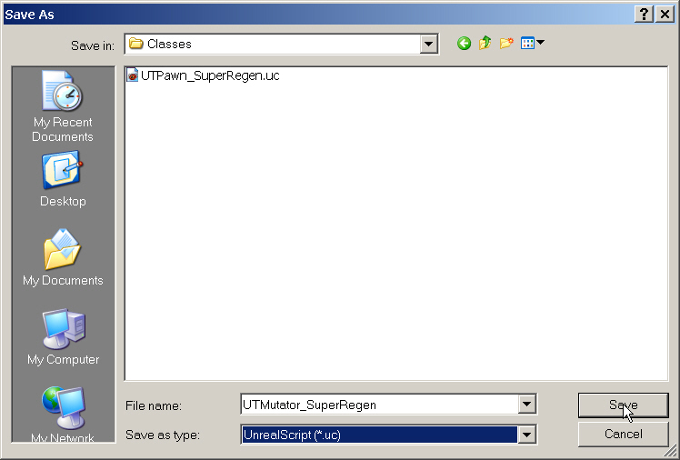FIGURE 2.10 – The Mutator script has been named and is ready to be saved
TUTORIAL 2.5 - COMPILING THE SCRIPTS
With the coding for the mutator out of the way, the next step in the process is to compile the scripts. This will involve setting up the UTEditor.ini file as well as running the compiler. If there are any errors, those will need to be corrected and the compiling process will need to be performed again. 1. The first step in the compiling process is to add the MasteringUnrealScript package to the list of ModPackages in the UTEditor.ini file. Without performing this step, the compiler will not know to look for our new scripts and they will not be compiled. Navigate to the following directory: ..\My Games\Unreal Tournament 3\UTGame\Config 2. Locate the UTEditor.ini file and open it in Notepad or some other text editor so that it can be edited. 3. Find the section of the .ini file with the [ModPackages] heading. A simple way to find this section is to search the file for ModPackages. 4. Place the cursor at the end of the following line and press Enter. ModOutputDir=..\UTGame\Unpublished\CookedPC\Script 5. Add this line to add the MasteringUnrealScript package to the list of packages to be compiled. ModPackages=MasteringUnrealScript 6. Save the UTEditor.ini file and close it. 7. As was mentioned in the previous chapter, there are several ways to run the compiler, or the Make commandlet to be more precise. Throughout the remainder of the book you will simply be instructed to compile scripts and it will be up to you to decide how to go about that. For now, choose one of the following:- If you set up ConTEXT according to the instruction in Appendix B, you can simply press F9 within ConTEXT to begin the compiling process.
- If you have created a shortcut to the UT3.exe with the make switch, run that now.
- Run the game or editor and choose to compile the scripts when prompted.
- Navigate to the Binaries directory of your UT3 installation and run the following command: UT3.exe make
FIGURE 2.11 – The successful output of the Make commandlet.
TUTORIAL 2.6 – PUBLISHING AND TESTING THE MUTATOR
It is now time to see if everything up to this point has indeed been successful. Theo only way to know if our mutator works is to test it out inside of Unreal Tournament 3. The script package created in the previous tutorial is located within the Unpublished directory. The game, by default, only acknowledges content located within the Published directory. This leaves us with two choices.- Copy the MasteringUnrealScript.u package to the Published directory
- Run Unreal Tournament 3 using the –useunpublished flag
FIGURE 2.12 – The Unreal Tournament 3 main menu. 6. Select the Deathmatch gametype on the next screen. 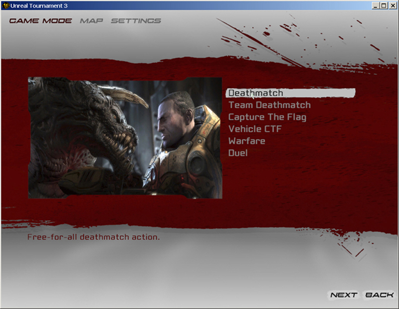
FIGURE 2.13 – Unreal Tournament 3’s Gametype selection screen. 7. Choose any map you wish from the list and then select Settings from the menu at the top of the screen. 8. The Mutator selection screen can be accessed by selecting Mutators from the bottom of the Settings screen. 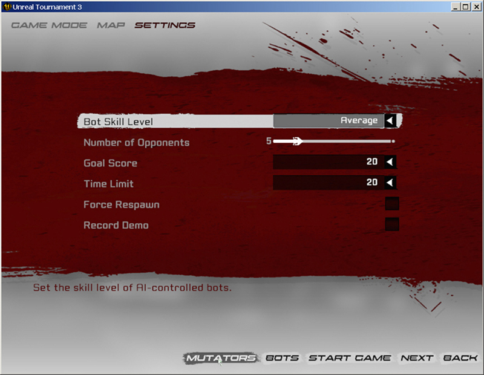
FIGURE 2.14 – The Mutator selection screen is accessed from the Gametype Settings screen. 9. Once you have opened the Mutator select screen, select the UTMutator_SuperRegen mutator from the list on the left and then choose Add from the bottom of the screen. 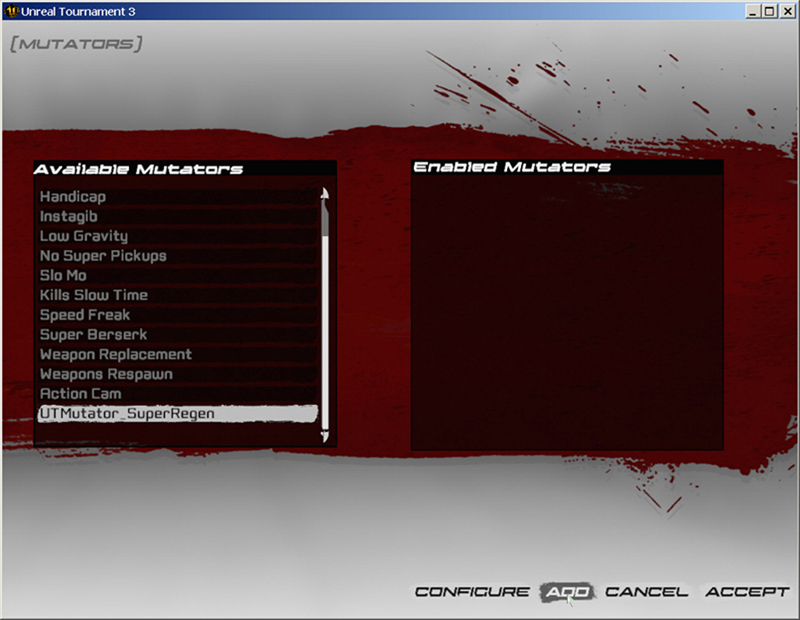
FIGURE 2.15 – Adding the SuperRegen mutator to the Enabled Mutators list. 10. Finally, click Accept on the Mutator selection screen followed by choosing Start Game from the next screen. Once the game begins, you will notice your health will immediately begin to regenerate until it hits the maximum allowed of 199. 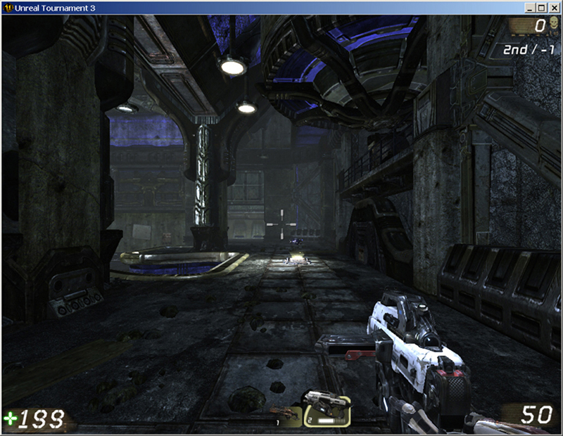
FIGURE 2.16 – The player’s health has regenerated to 199.
SUPPLEMENTAL FILES
- Chapter2_CompleteSource.rar: Completed Scripts